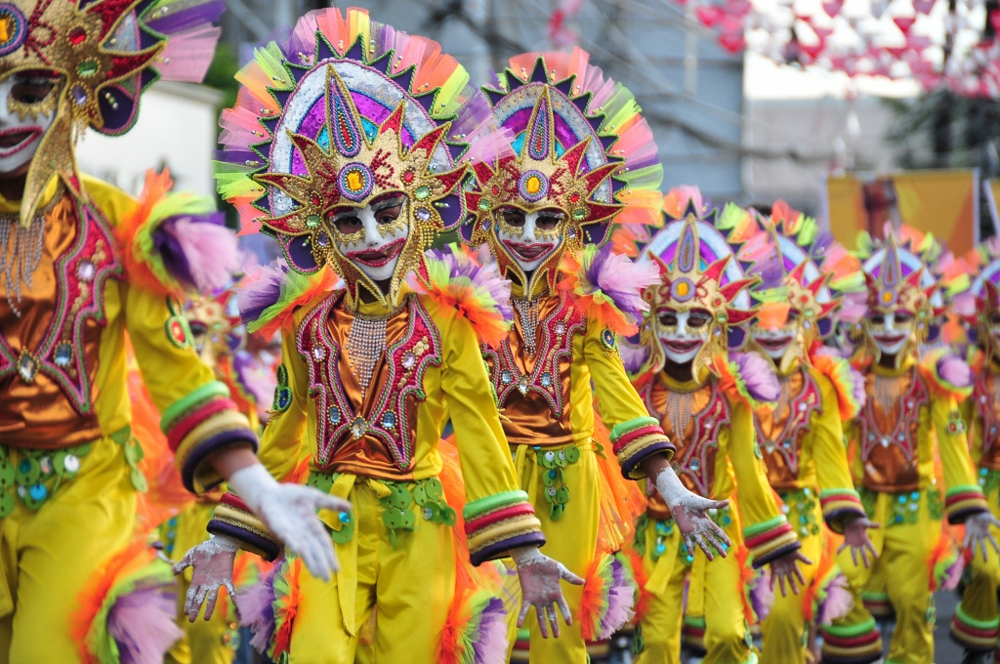

Skills & Safety • Philippines
Responsible Tourism Principles
Respect local culture and rules, ask permission before photographing people, support local businesses, conserve water and energy, and choose operators that protect nature.
Helpful reminders
- Respect local culture, traditions, and community rules.
- Ask permission before taking photographs of local people.
- Support local shops, restaurants, guides, and businesses.
- Conserve water and electricity during your visit.
- Choose tour operators that protect wildlife and natural areas.
- Avoid buying products made from endangered wildlife.
- Follow park rules and instructions from local guides.
- Keep destinations clean and dispose of waste properly.
- Respect cultural landmarks and sacred places.
- Be considerate of other visitors and local residents.
- Leave natural areas as clean as or cleaner than you found them.